Tips
Hula is a professional indoor drone for artificial intelligence and educational programming, with high requirements for the use methods and use environment. In order to quickly understand the basic use methods and various considerations of this Product and to improve the efficiency and reduce various risks during use, please read the
The Hula drone is suitable for ages 14 and above. Children should use it under the supervision of a guardian.
Description of symbols:
Cautions |
|---|
Note |
|---|
1.Children under the age of 14 should use this Product under the supervision of an adult.
2.This Product is a multi-rotor aircraft that offers an easy flight experience when powered normally and with all components undamaged. Please visit the official website of Shenzhen HighGreat Innovation Technology Development Co., Ltd.(hereinafter referred to as "HighGreat Innovation") to obtain the complete User Manual as well as the latest instructions and warnings. HighGreat Innovation reserves the right to update all documents.
3.The information in this document affects your safety and your legal rights and responsibilities. Read this entire document and the User Manual carefully to ensure proper configuration before use. Failure to read and follow the instructions and warnings in this document may result in property loss, safety incidents, and personal injury risk. By using this Product, you hereby signify that you have read this disclaimer carefully and that you understand and agree to abide by the terms and conditions herein. Users undertake to be responsible for his / her own actions and all consequences arising therefrom. Users agree to use this Product only for legitimate purposes and to abide by these terms and conditions in this clause and any related policies or guidelines that may be established by HighGreat Innovation. You understand and agree that without flight records from the APP, HighGreat Innovation may be unable to analyze the causes of product damage or accidents and may not be able to provide you with HighGreat Innovation’s after-sales service.
4.HighGreat Innovation assumes no responsibility for any loss or damage resulting from users’ failure to follow the instructions in this document and the User Manual when using this Product. Subject to compliance with laws and regulations, HighGreat Innovation reserves the right to final interpretation of this document. HighGreat Innovation reserves the right, at any time, to update, revise, or terminate these terms without prior notice.
5.Please visit the official website for the complete User Manual and the latest instructions and warnings. Shenzhen HighGreat Innovation Technology Development Co., LTD. (hereinafter referred to as " HighGreat Innovation") reserves the right to update all documents.
1.Please stay away from the high-speed rotating propellers to prevent cuts.
2.The propeller motors are heat-producing components. Please do not touch to avoid burns.
3.In order to ensure the electromagnetic environment of the aviation radio station, it is forbidden to use all kinds of model remote controls in the area with the airport runway as the center point and a radius of 5000 m. During the period when the radio control commands are issued by the relevant state departments, the model remote control shall be stopped as required.
4.Please use the dedicated batteries equipped. DO NOT short-circuit the positive and negative terminals of the battery.
1.Please stay away from the high-speed rotating propellers to prevent cuts.
5.The product package and the manual contain important information and should be retained.
6.Please use this Product within the operating environment range specified in the specifications.
7. DO NOT direct the laser at human eyes to avoid causing eye injuries.
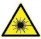
The user acknowledges and agrees to be responsible for all consequences arising from the use of the aircraft.
1.Fly NO higher than 10 meters above ground level.
2.Fly in conditions with wind speed below class 3. DO NOT fly outdoors during thunderstorms or typhoon weather.
3.Indoor environments can be complex. When flying indoors, please assess thoroughly whether the flight environment is safe.
4.Maintain a distance of at least 2 meters between the aircraft and any pedestrians when you operate the aircraft.
5.Use the aircraft in an environment with clear ground textures and without strong light exposure. Flying over water surfaces or mirrored surfaces is strictly prohibited.
Please comply with the local laws and regulations when using the aircraft to avoid possible injury and damage.
Please observe the following rules:
1.DO NOT fly the aircraft in the vicinity of manned aircraft. Land your aircraft immediately when necessary.
2.DO NOT fly the aircraft in or at densely populated areas, including but not limited to cities, sports stadiums, exhibitions, and concerts.
3.Make sure that your aircraft does not interfere with manned aircraft operations. Be aware of and avoid any other aircraft at all times.
4.DO NOT fly in the no-fly zones specified by local laws and regulations. No-fly zones include airports, borderlines, power plants, hydropower plants, prisons, heavily traveled roadways, government buildings, military facilities.
5.DO NOT fly the aircraft above the authorized altitude.
6.Keep your aircraft in sight at all times and arrange for an observer to assist you in monitoring the aircraft's position if needed.
7.DO NOT use the aircraft to transport dangerous or contraband items.
8.Make sure you understand the type of your flight operation (such as for recreation, for public use, or for commercial use). You have to obtain the corresponding license from the related agencies before the flight. If necessary, you can consult with local legal professionals for detailed definitions and explanations of flight activity categories. Please note that in certain regions and countries, the use of aircraft for any form of commercial activity is prohibited.
9.Respect the privacy rights of others when using the aircraft for photo taking. DO NOT conduct surveillance operations without authorization. These operations include but are not limited to conducting surveillance on any person, entity, event, performance, exhibition, or building.
10.Please be advised that in certain regions or countries, the recording of images and videos of any person, entity, event, performance, exhibition, and so on by means of a camera may contravene copyright or other legal rights, even if the image or video is not shot for commercial use. In certain regions and countries, the use of small aerial models for commercial purposes is also prohibited. Therefore, please carefully understand and comply with the local laws and regulations before use.
11.Shall not arbitrarily change the use scenario or use conditions of the aircraft, expand the transmission frequency range, increase the transmission power (including additional RF power amplifier), shall not arbitrarily change the transmission antenna.
12.Shall not cause harmful interference to other lawful radio stations (stations), nor shall protection from harmful interference be proposed;
13.Shall withstand interference from industrial, scientific and medical (ISM) applications radiating RF energy or other legitimate radio station (station) interference.
14.If harmful interference occurs to other legal radio stations (stations), the use shall be stopped immediately, and measures shall be taken to eliminate the interference before the use can continue.
15.The use of Hula in aircraft, radio observatories, meteorological radar stations, satellite earth stations (including measurement and control, ranging, receiving and navigation stations) and other military and civilian radio stations (stations), airports and other electromagnetic environmental protection areas in accordance with laws and regulations, relevant state regulations and standards shall comply with the provisions of the competent authorities of electromagnetic environmental protection and relevant industries.
Hula is a programmable educational aircraft designed specifically for teenagers. It supports various terminal devices for programming flight using Scratch and can also be wirelessly controlled for flight through the Hula APP. The aircraft is equipped with a visual positioning system, gimbal system, image transmission system, obstacle avoidance system, and flight control system. It can perform functions such as 1080P HD image transmission, photo-taking, video-recording, AI recognition, obstacle avoidance, line patrol, and various flight stunts.
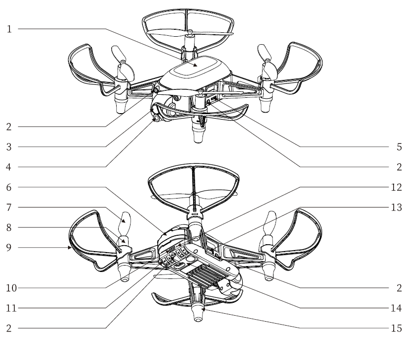
| 1. Lamp cover | 6. Battery | 11. Obstacle Avoidance Adjustment Knob |
| 2. Infrared Obstacle Avoidance Transmitter | 7. Propeller | 12. Reset Button |
| 3. Gimbal/Front Camera | 8. Motor | 13. Expansion Serial Port |
| 4. Laser Transmitter | 9. Propeller Guard | 14. Visual Positioning System |
| 5. Micro USB Port | 10. Power Button | 15. Foot mats |
| Specifications | Parameters | |
| Aircraft | Weight(Battery included) | 100 g (± 3 g) |
| Axle distance | 128mm | |
| Aircraft dimensions | 189.3*184.6*50mm | |
| Motor specifications | L8.5 20 | |
| Propeller blade | 75mm/3” | |
| Wind resistance class*① | Below Class 3 | |
| Positioning method | Optical flow and QR code (support expansion UWB positioning) | |
| Positioning accuracy | QR code: horizontal ± 5 cm, vertical ± 10 cm | |
| Optical flow: horizontal ± 20 cm, vertical ± 10 cm | ||
| Max tilt angle | 20° | |
| Max horizontal speed*② | 3 m/s | |
| Max climb speed | 1.2 m/s | |
| Max descent speed | 1m/s | |
| Max flight height | 10m | |
| Max communication distance | 50m | |
| Antenna type | PCB Antenna | |
| Antenna Gain | 2.4GHz:3.41dBi (MAX) 5.8GHz:2.31dBi (MAX)*③ | |
| Communication frequency | 2.412-2.462GHz，5.745-5.825GHz | |
| Transmitting power limit | ≤14dBm(e.i.r.p) | |
| Max lighting power | 1.5W | |
| Flight time*④ | 9~10min | |
| Operating temperature | 0~40°C | |
| Battery | Capacity | 1200mAh |
| Voltage | 3.8V | |
| Type | Lithium-ion battery | |
| Weight | 31g | |
| Storage temperature*⑤ | ≤1Month:-20°C~45°C | |
| ≤3Month:-20°C~30°C | ||
| ≤1Year:25±3°C | ||
| Laser | Wavelength | 640nm |
| Camera | Photo | 1920*1080P |
| Video | 720P/30fps*⑥ | |
| Field of view | 71° | |
| Format | JPG，MP4 | |
| Charging box (optional) | Input voltage | 5V 3A |
| Charging current | 1.4A | |
| Control software | Hula APP for mobile | IOS 15.0 or above and Android 11 or above |
| Hula APP for PAD | IOS 15.0 or above and Android 11 or above | |
| Hula software version for PC | 64-bit operating system (Windows 10 or above) | |
Hula noise measurement (Normalized to 1 m from drone) schedule:
| Observation | Hover | Moving 1 m/s |
| Ground (vertically below) | 71.1dB（A） | 75.2dB（A） |
| Side (contour plane) | 70.2dB（A） | 76.2dB（A） |
| Note: The test environment was a full anechoic chamber. | ||
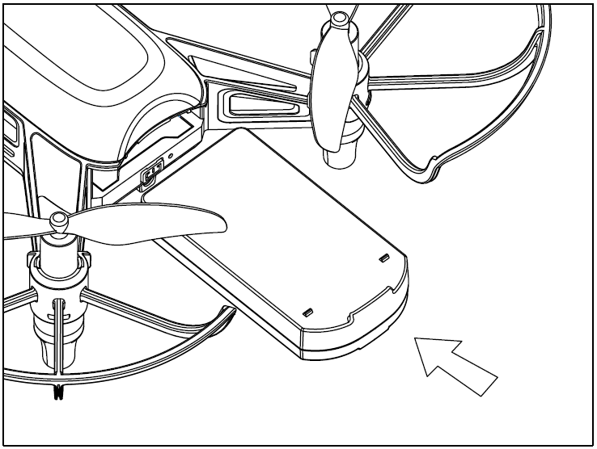
Insert the flight battery into the aircraft as shown.
Hold the aircraft body steady, place the side with a sticker of the battery facing downward, and insert it into the battery compartment on the back of the aircraft. Push it in until you hear a click, which indicates that the battery is properly installed.
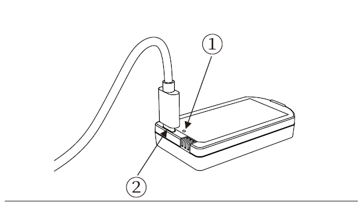 | 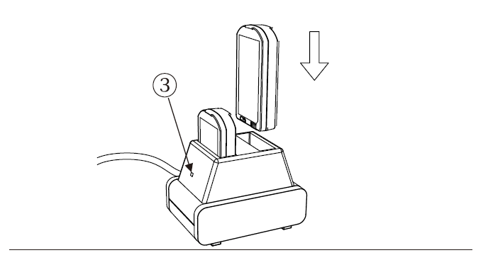 |
| ①Indicator for charging status on the battery, ②USB charging port, | ③Indicator for charging status on the charging box. |
| Using USB direct charger: Solid red, charging;Red light being off, charged; | Using charging box: Solid red, charging;Solid green, No pulgged in or charged; |
Hula supports two charging methods. You can use a standard Micro USB cable to connect the battery's Micro USB port to your own USB 5 V charger for charging, which takes about 1 hour and 40 minutes. Alternatively, you can insert the battery into the dedicated charging box for charging, which takes about 1 hour.
※Please use the dedicated charging box equipped by HighGreat Innovation to charge the battery. ※In case the battery gets wet, swells, leaks, emits unpleasant odors, deforms, or exhibits any other abnormalities, please stop using it immediately. ※Please use a 5V 3A power adapter for the charging box. |
|---|
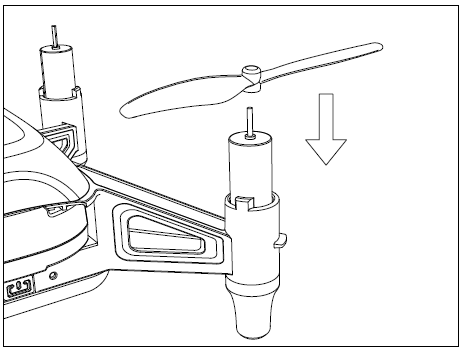
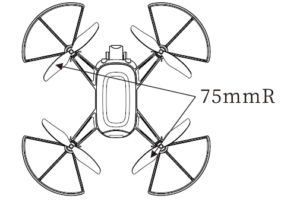
When mounting, ensure that the gap between the bottom of the propeller cap and the motor is no bigger than needed to insert the propeller removal tool.
※Please note that the propeller blades with "75 mmR" markings should be installed on the top left and bottom right sides of the aircraft nose, while the propeller blades with "75 mm" markings should be installed on the top right and bottom left sides of the nose. Failing to follow this configuration may result in the aircraft not being able to take off properly. |
|---|
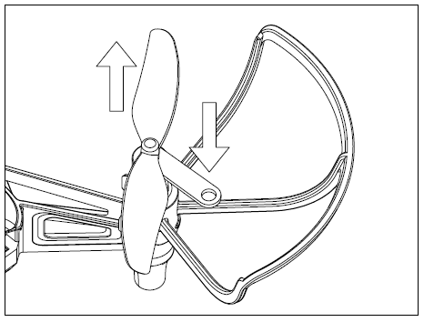
Detach the propellers
Insert the propeller removal tool between the propeller cap and the motor, press down on the other end of the removal tool, and then remove the propeller blade.
※Always detach the propellers using the propeller removal tool. DO NOT remove the propellers by hand, or you may be seriously hurt and may damage the motors. |
|---|
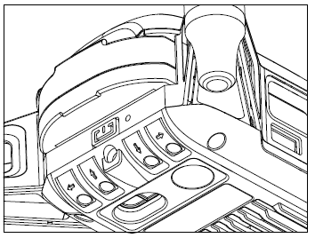 | Press and hold the power button on the back of the aircraft for 2 seconds to power on/off the aircraft. |
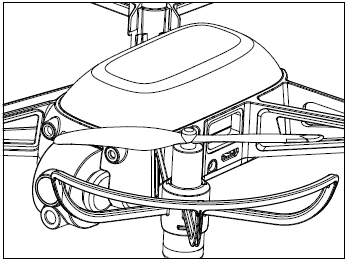 | After the aircraft is powered on, it is in the direct connection mode if the lamp cover flashes with purple light. |
| Connect your PC/mobile device to the aircraft WiFi, and the initial password is 12345678. |
※Run the Hula APP, and when the aircraft status indicator stays solid green and the APP indicates a successful connection to the aircraft, it means the aircraft is successfully connected. ※By default, the aircraft is set to the direct connection mode. If you have switched modes, press the power button three times to switch back to the direct connection mode. |
|---|
| While the aircraft is powered on, you can press the power button three times quickly to switch between the direct connection mode and the networking mode. | |
| When the aircraft is switched to the direct connection mode, the lamp cover will flash with purple light. When the aircraft is switched to the networking mode, the lamp cover will flash with white light. |
Direct connection mode: Connect the PC/mobile device directly to the aircraft WiFi and control the aircraft using the Hula APP.
Networking mode: Connect both the PC/mobile device and the aircraft to your own router WiFi. In networking mode, multiple aircrafts can network together to compete on the same stage.
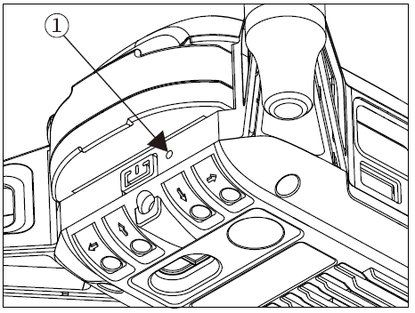
1. Press and hold the reset button inside the reset hole for 5 seconds, and the aircraft WiFi will be restored to factory settings. If the green light of the aircraft blinks fast after releasing, the aircraft is reset successfully.
2. Press and hold the reset button inside the reset hole for 10 seconds to revert the firmware version of the aircraft to the previous one. If the aircraft restarts automatically after releasing, the aircraft is reset successfully.
※DO NOT perform the reset operation violently in case you may damage the internal components of the aircraft. |
|---|
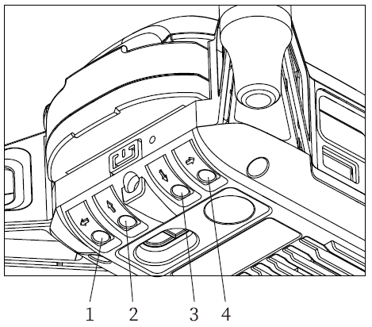 |
①Left obstacle avoidance adjustment knob ②Rear obstacle avoidance adjustment knob ③Front side obstacle avoidance adjustment knob ④Right obstacle avoidance adjustment knob |
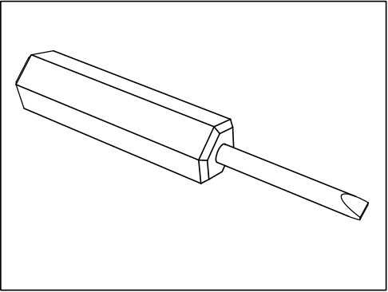 |
1、Use a special screwdriver for obstacle avoidance adjustment knob, insert the adjustment screw hole, and turn the knob clockwise/counterclockwise to adjust the obstacle avoidance distance in each of the four directions.
2、The obstacle avoidance distance can be reduced by turning the obstacle avoidance adjustment knob clockwise. Turn the obstacle avoidance adjustment knob counterclockwise to increase the obstacle avoidance distance.
※DO NOT twist the knob violently in case you may damage the internal components of the aircraft. ※The infrared obstacle avoidance receiver is placed inside the lampshade, do not block the lampshade. ※The obstacle avoidance distance has been adjusted before delivery, and the effective distance of obstacle avoidance is about 30-50cm. If it is necessary to adjust it again, please use the whiteboard to adjust it under ordinary lighting conditions in the room. The obstacle avoidance distance of the reflected object is different in material or color. |
|---|
1. If there is a glitch on the aircraft, please contact official channels for repair service.
In need of maintenance service, please contact your dealer, or contact HIGHGREAT customer service in the following ways:
Manufactured by：Shenzhen HighGreat Innovation Technology Development Co., Ltd.
Shenzhen HighGreat Innovation Technology Development Co., Ltd
Address：2/F, Building 6.Yuanlingzi Industrial Zone, Hengping Road, Yuanshan StreetLonggang District,Shenzhen
E-mail: service@hg-fly.com
TEL: (+86)19924918168
| Official website of HG | WeChat Official Account |
The Hula APP is the companion control software for the Hula drone, designed to create an educational and entertaining drone programming platform. It explores innovative gameplay for drone battles, connects with virtual reality, sparks children's curiosity, and encourages them to explore from the heart. It offers a joyful learning experience in drone programming using artificial intelligence.
QR code for Android devices
Download the Android version of the Hula APP Supports mobile phones and pads
Or you can use your Browser to open the download link at:
https://download.hg-fly.net/app/hula_app.html
After the download is finished, please follow the prompts to install it.
QR code for iOS devices
Redirect to the App Store to download the iOS version of the Hula APP Supports iPhone and iPad
Or you can use your browser to open the link at:
https://download.hg-fly.net/app/hula_app.html
Redirect to the Apple App Store to download and install it.
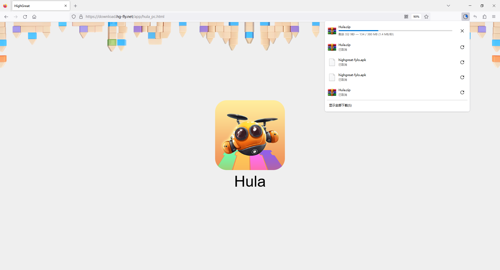
To download the PC version of the Hula exe, you can use your computer browser to open the download link at:
https://download.hg-fly.net/app/hula_pc.html
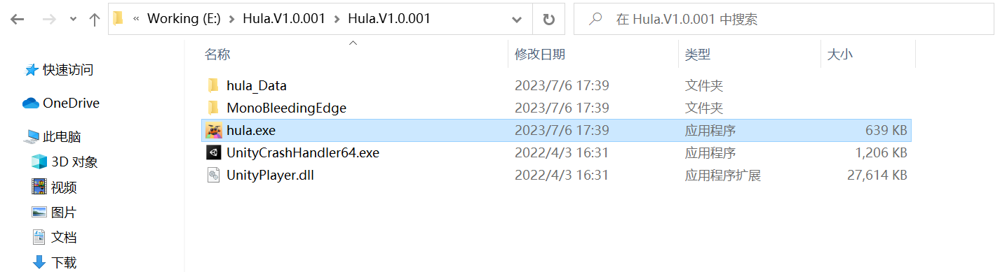
After the download is finished, find and double-click the installation package Hula.exe to install it. Turn off the firewall during installation. Install it in a directory named in English. Otherwise, it may fail to start. Supports Win10, not MacOs.
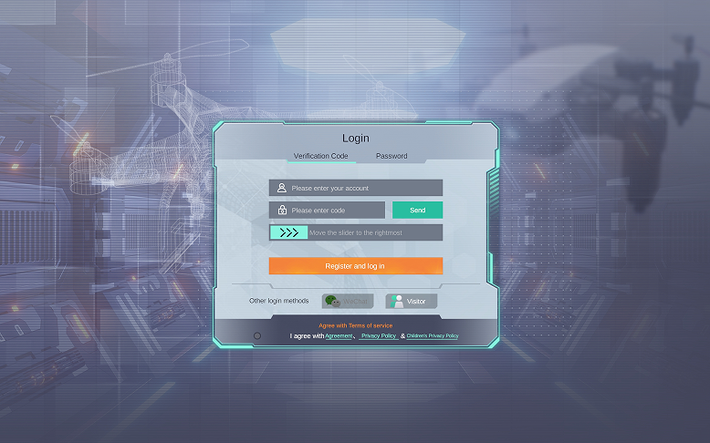
Domestic server: For domestic users, please select [English] to register/log in to the domestic server;
Foreign server: Foreign users please select [English] or [other language] to register/log in to a foreign server.
The account data of domestic and foreign servers does not communicate with each other. If you need cross-border access, you can change the language and re-register, and the login takes effect.
Please provide a Chinese mobile phone number or email to register.
After a successful login, your local login status will be maintained for 30 consecutive days.
Enter your account number, get the verification code, then click the Next Step button, and you can set your password.
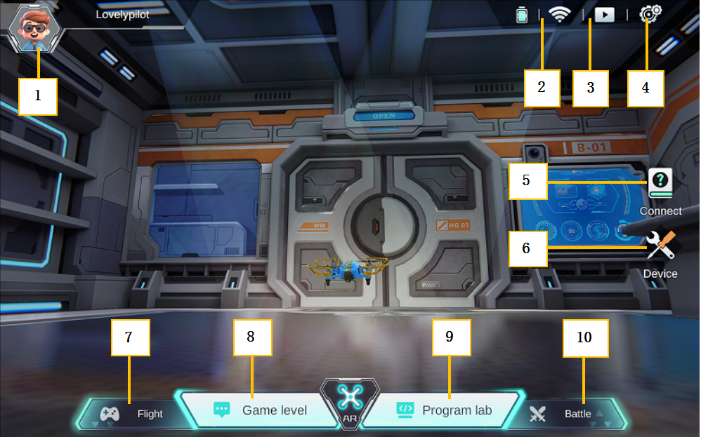
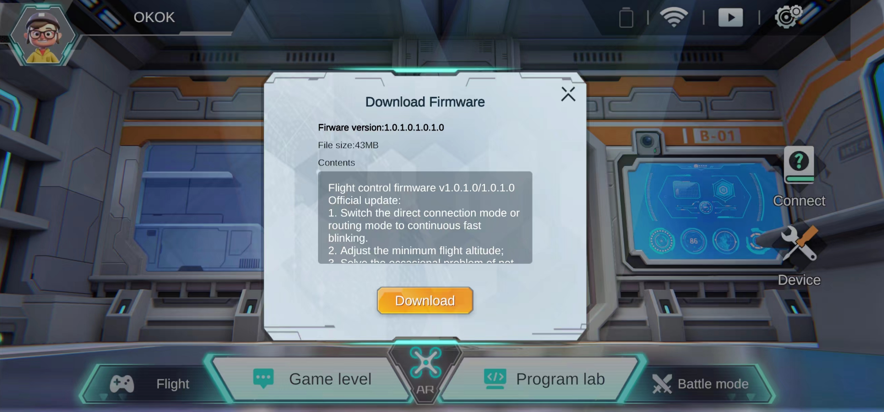
The server has been connected, and the APP will automatically detect the latest firmware version. Please click [Download].
After downloading, connect the aircraft and follow the prompts to upgrade the flight control firmware.
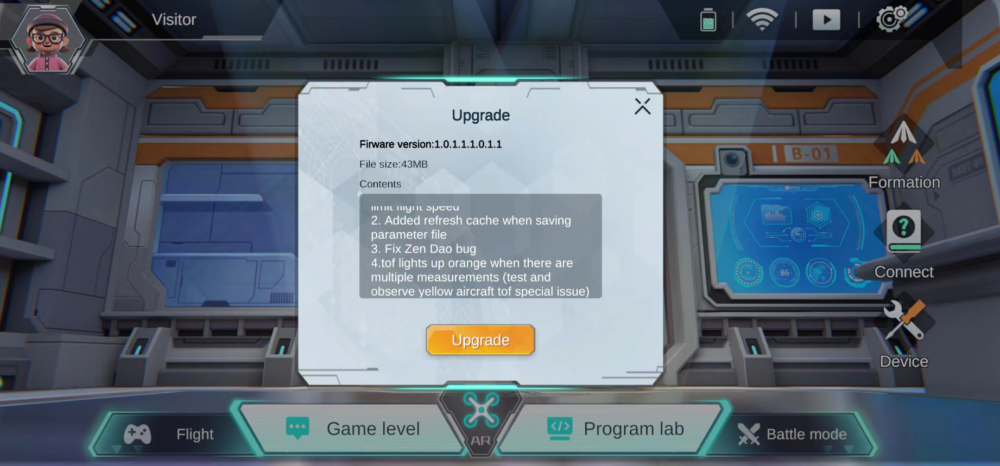
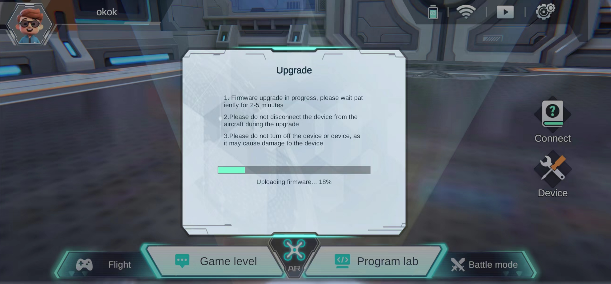
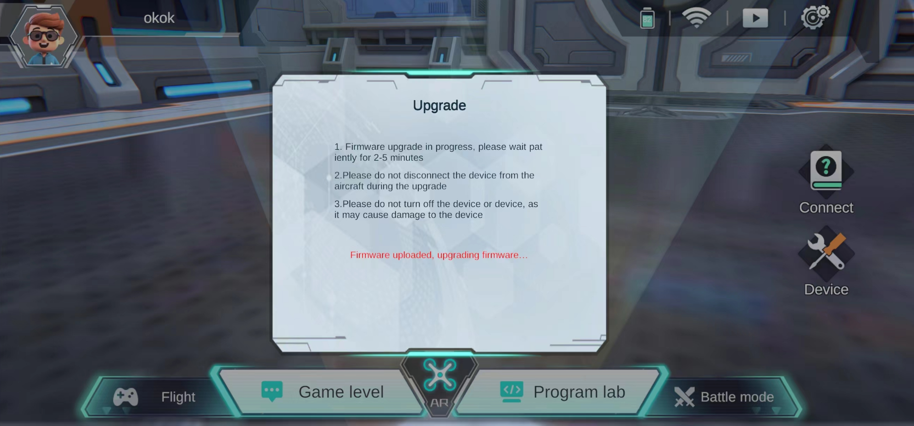
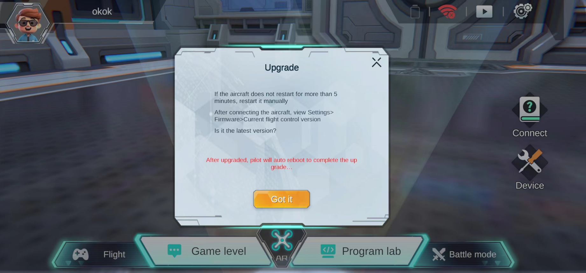
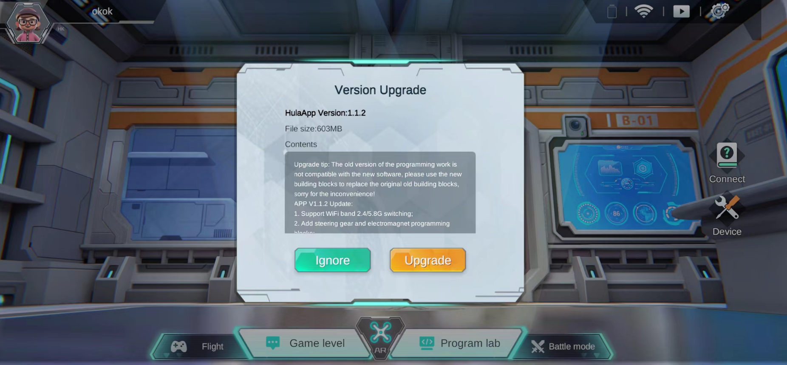
When the server is connected and the APP is started, the latest APP version will be automatically detected.
For Android and Win10 systems, click [Upgrade Now], after downloading, please upgrade according to system guidelines;
If you click "Upgrade Now" on iOS, you will be redirected to the Apple Store. Please manually download the installation package to upgrade.